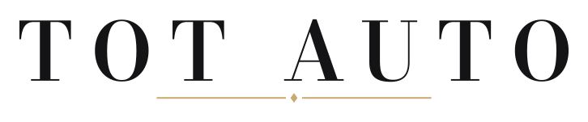
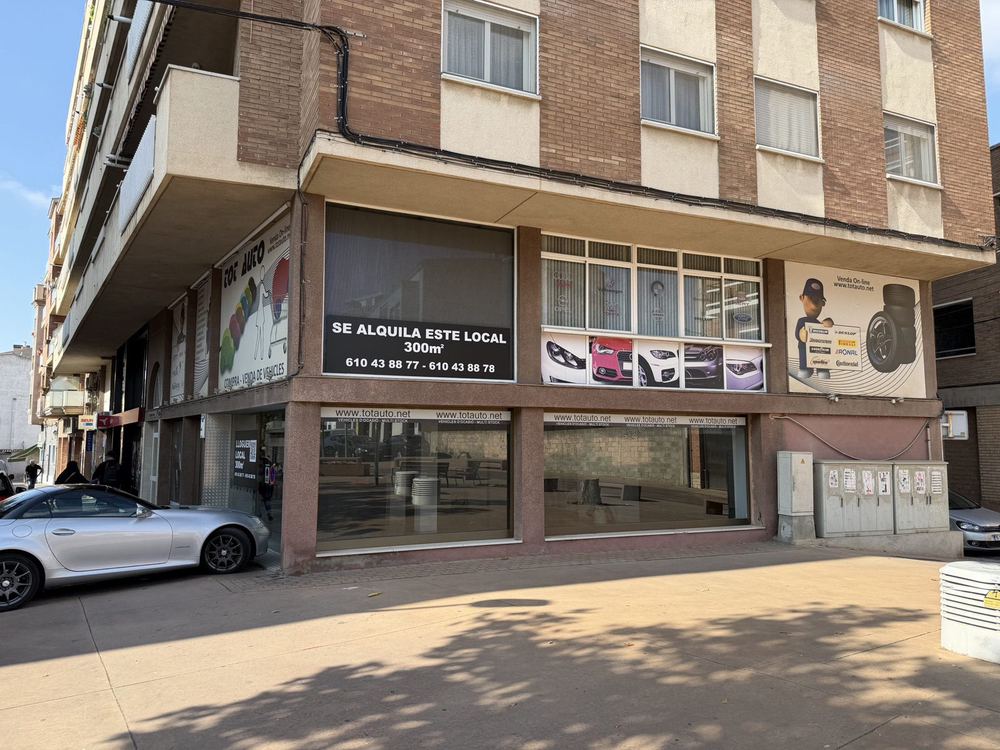

A
Wordmark de lujo · Bodoni Moda
Grande · grafito

Grande · blanco

Mediano y pequeño

Símbolo y favicon

símbolo48
32
16
Tot Auto · Showroom
totauto.net
Rótulo de fachada · letras corpóreas

Cabecera de la web
Deportivos y alta gama, en Tàrrega.
Cuarenta años en el motor. Cada coche, una pieza.
Ver vehículos